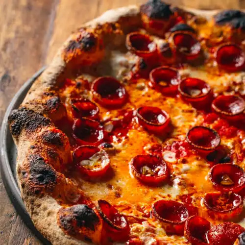

Pepperoni Pizza

Pepperoni pizza is a classic favorite, a crowd-pleaser, and an easy weeknight meal for even the busiest families.
Ingredients:
For the crust
- 4 cups Bread flour
- 2 ½ tsp Active dry yeast
- 1 ¾ cups Lukewarm water
- 2 tbsp Olive oil
- 1 ½ tsp Salt
- 2 tsp Granulated sugar
For the sauce
- 2 (8oz) cans Canned tomatoes
- ¼ cup Tomato paste
- 2 tbsp Extra-virgin olive oil
- 2 tsp Granulated sugar
- 2 tsp Fresh oregano Chopped
- 2 tsp Fresh basil Chopped
- 2 cloves Garlic Minced
- Salt and freshly ground black pepper
For the pizza
- 2 tbsp Olive oil
- 3 cloves Garlic Minced
- 4 cups Mozzarella Shredded
- ½ cup Parmesan Finely grated
- 40 slices Pepperoni sausage
- 4 tbsp Fresh oregano Chopped
Directions:
For the crust
- In a large mixing bowl or the bowl of an electric stand mixer, combine the sugar, yeast, and ½ cup of warm water, then whisk until the yeast has dissolved completely.
- eave the mixture to rest for 5-10 minutes, then add the rest of the warm water, olive oil, and salt.
- With the mixer at low speed, slowly add in half of the flour and mix until combined.
- Mix in the rest of the flour and then knead at medium-low speed until a smooth, elastic, and slightly sticky dough is formed.
- Cover the bowl with plastic wrap and leave it to rest in a warm place until the dough has doubled in size, approximately 1-2 hours.
For the sauce
- Put all ingredients in a big bowl.
- Mix together with a mixer.
For the pizza
- Preheat oven to 450 degrees (or appropriate temperature if using a pizza oven). We recommend any of the Ooni ovens for making pizza.
- Remove the dough from the bowl and place onto a lightly floured work surface.
- Divide the dough into two equal portions./li>
- Working with one portion of dough at a time, hand-stretch the dough to create a 12-inch round.
- Stretch and pinch the dough to create a slightly thicker rim around the edge. Repeat with the second portion of dough.
- In a small bowl, mix 2 tablespoons of olive oil with three minced garlic cloves, then brush over both dough rounds.
- Evenly spread 2/3 cup of pizza sauce over each pizza, leaving the rim bare.
- Top the sauce with mozzarella, parmesan, and slices of pepperoni.
- Place one pizza in the oven and bake for 12-14 minutes.
- Remove from the oven and top with oregano.
- Place the second pizza in the oven and bake for 12-14 minutes, then remove and top with oregano.
- Slice, serve, and enjoy.
Home